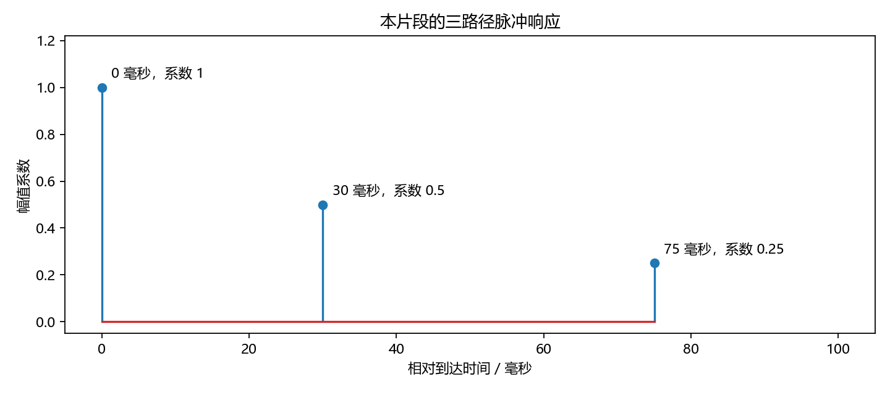
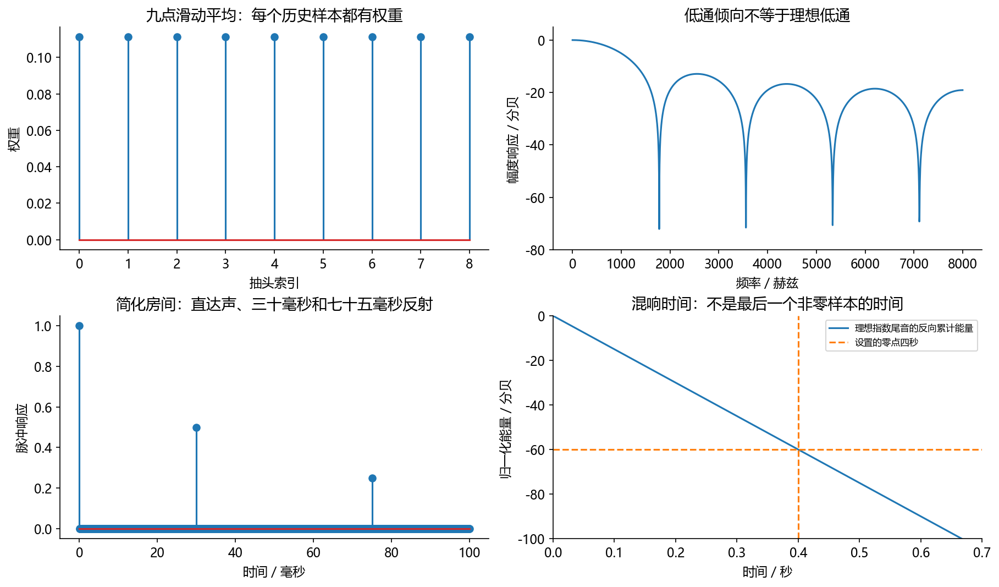
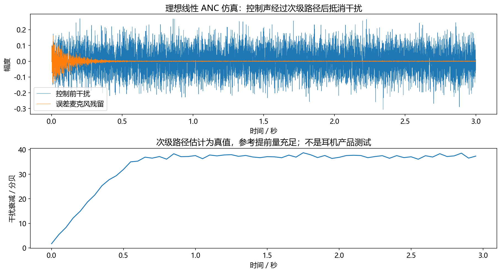

看图理解 · 跟着推演 · 对照真实结果
第11课 · 房间为什么会给声音加尾巴
先建立直觉，再逐节讲原理、代码与结果；章节目录可定位学习。用三条传播路径和一个实际衰减实验，讲清RIR、DRR、RT60及水声迁移。
从直觉、原理，到代码与结果
本版保留导览小实验，增加教材逐节精讲、代码分段阅读和结果解释。三个项目另有本次真实模型短推理，第 12 课增加实际训练曲线。按右侧小节分次学习即可，不必一次看完。
完整文字、规范公式和注释代码仍在上方“读完整图文”。视频中的历史报告、教学算例与本次实测分别标明，短演示不冒充完整重训或设备验收。
先修：卷积、分贝和滤波器
- 把反射延迟从秒换算成采样
- 读懂能量衰减与RT60
- 分清PCM、声压级、AEC与ANC
本课覆盖清单与证据范围
- 这章解决什么问题
- 1. 一声拍手为什么会拖出尾巴
- 2. 手算三个副本：混响会改变时间，也会改变频率
- 3. RT60：用能量衰减速度描述尾巴，而不是盯最后一个非零采样
- 4. 近场、远场与距离：不要把“远场语音”误当绝对距离标签
- 5. 从 PCM 数值到声压，需要校准链而不是一个乘法猜测
- 6. 水声背景怎么迁移，哪些东西不能直接迁移
- 7. ANC 为什么不是 AEC 换个缩写
- 8. 练习、答案和一份可展示作业
结果从哪里来
- 导览中的小算例实际执行
- 原教材逐节讲解；正文代码/公式/图保留
理想全正指数与三脉冲算术教学，不是真实RIR测量；没有硬件ANC试验或声压安全结论。
新版视频时间轴已改变，单独记录续播位置；学习计划的完成勾选保持不变。
跟着运行：注释代码、实际输出与结果图
下面代码在生成本站时实际执行。这里只是教学小实验，不是完整模型训练或业务设备测评。
import numpy as np
fs, target_rt60 = 16000, 0.4
# 理想指数只验证衰减计算，不是真实房间响应
t = np.arange(fs*2)/fs
h = np.exp(-3*np.log(10)*t/target_rt60)
# 反向累计平方：看每个时刻之后还剩多少能量
energy = np.cumsum(h[::-1]**2)[::-1]
edc_db = 10*np.log10(np.maximum(energy/energy[0], 1e-15))
valid = (edc_db <= -5)&(edc_db >= -35)
slope, intercept = np.polyfit(t[valid], edc_db[valid], 1)
fit_db = slope*t + intercept
estimated = -60/slope
print('斜率/dB每秒:', round(slope, 3))
print('外推RT60/秒:', round(estimated, 4))
print('三路径DRR/dB:', round(10*np.log10(1/(0.5**2+0.25**2)), 4))
本次实际输出
斜率/dB每秒: -150.0 外推RT60/秒: 0.4 三路径DRR/dB: 5.0515

精讲中的代码、运行步骤与大图
代码片段用于逐行理解；真实运行结果仅限明确标注“本次实际”的部分。教材历史图保留原有实验范围。
代码精读 03 · 第1–18行
源码精读 / 教学片段，需配套环境与上下文，不等同于独立脚本。
import numpy as np
fs = 16000
h = np.zeros(1601)
# 三个离散传播分量，0、30、75 毫秒；不是完整实测房间。
h[[0, 480, 1200]] = [1.0, 0.5, 0.25]
impulse = np.array([1.0])
response = np.convolve(impulse, h)
direct_energy = response[0]**2
reflected_energy = np.sum(response[1:]**2)
drr = 10*np.log10(direct_energy/reflected_energy)
print("三个到达时间 ms：", np.flatnonzero(h)/fs*1000)
print("模型 DRR dB：", drr)
assert np.isclose(drr, 5.051499783199061)
# 保存同一个三路径模型的图，零点表示直达声到达时刻。
from pathlib import Path
import matplotlib代码精读 03 · 第19–35行
源码精读 / 教学片段，需配套环境与上下文，不等同于独立脚本。
matplotlib.use("Agg")
import matplotlib.pyplot as plt
plt.rcParams.update({"font.family": "Microsoft YaHei", "axes.unicode_minus": False})
fig, ax = plt.subplots(figsize=(9, 4))
arrivals = np.flatnonzero(h)
ax.stem(arrivals/fs*1000, h[arrivals])
for index in arrivals:
ax.annotate(f"{index/fs*1000:.0f} 毫秒，系数 {h[index]:g}",
(index/fs*1000, h[index]), xytext=(7, 7), textcoords="offset points")
ax.set(title="本片段的三路径脉冲响应", xlabel="相对到达时间 / 毫秒", ylabel="幅值系数",
xlim=(-5, 105), ylim=(-0.05, 1.22))
fig.tight_layout()
out = Path("tutorial/figures/ch11_room_impulse.png")
out.parent.mkdir(parents=True, exist_ok=True)
fig.savefig(out, dpi=160)
plt.close(fig)
print("已保存运行图：", out.as_posix())结果读图 03 · 2. 手算三个副本：混响会改变时间，也会
原教材运行记录

原教材已存图 不是本次新测 先确认实验范围 再解释坐标与单位
代码精读 04 · 第1–14行
源码精读 / 教学片段，需配套环境与上下文，不等同于独立脚本。
import numpy as np
fs, expected_rt60 = 16000, 0.4
t = np.arange(fs*2)/fs
# 独立理想指数尾音：幅值在 expected_rt60 秒衰减 60 dB。
h = np.exp(-3*np.log(10)*t/expected_rt60)
# 从末尾反向累计平方，得到剩余能量；再相对初值归一化。
edc = np.cumsum(h[::-1]**2)[::-1]
edc_db = 10*np.log10(np.maximum(edc/edc[0], 1e-15))
valid = (edc_db <= -5) & (edc_db >= -35)
slope, intercept = np.polyfit(t[valid], edc_db[valid], 1)
estimated_rt60 = -60/slope
print("理想尾音 RT60 秒：", estimated_rt60)
assert np.isclose(estimated_rt60, 0.4, atol=1e-4)结果读图 04 · 3. RT60：用能量衰减速度描述尾巴，
原教材运行记录

原教材已存图 不是本次新测 先确认实验范围 再解释坐标与单位
结果读图 08 · 7. ANC 为什么不是 AEC 换个缩
原教材运行记录

原教材已存图 不是本次新测 先确认实验范围 再解释坐标与单位
闭卷自测：EDC可靠区间斜率−100 dB/s，外推RT60是多少？
−60/(−100)=0.6秒。前提是区间确实反映衰减，不是背景噪声平台。
逐字讲稿 · 可定位回看
在空走廊拍手，声音往往不会立即消失；墙面、地板和天花板让声音经过不同路线到达。先把复杂房间简化成一条直达路径和两次反射。
输入先取一个理想数字脉冲 [1,0,0]。房间的简化响应为 [1,0.5,0.25]，表示立即一份、晚一步半份、再晚一步四分之一份。 输出会出现 1、0.5、0.25，再回到 0。声音的尾巴来自房间响应，不是输入又说了三遍。
连续讲话时，每个时刻都会产生自己的这些副本，副本之间再相加。卷积就是把这件事写成可计算的规则。 三个系数是教学模型，不是测出来的真实房间。真实反射具有频率特性，房间和设备还可能随时间变化。
在铺地毯的小房间和空走廊里拍手，声音尾巴往往不同。最先到达的是直达声，后面出现墙面等路径的早期反射，再往后很多反射叠在一起，形成稠密的混响尾部。
可以把反射想成延迟的小副本，但材料吸收随频率变化，位置和遮挡也会改变它。这个类比帮助理解时间关系，却不意味着每次反射都只是把整段音频乘同一个常数。
今天不需要制造很大的声音测房间。我们先用合成数组解释传播，再用能量衰减计算验证公式。模型算对和真实房间测准是两个不同验收阶段，不能只展示一条漂亮曲线就混为一谈。
如果把短时间内的房间近似成线性时不变系统，输出是输入与脉冲响应的卷积。脉冲响应简称 RIR，可以理解为这个位置组合对单位脉冲的反应，记录延迟和强弱。
这里的每个输入采样都会通过多条路径产生副本，许多副本再叠起来。不是只有一句话开头反射一次。卷积公式中的历史下标，就是把不同到达时间明确写进了计算。
移动麦克风、移动声源、开门或者换家具，都可能改变这条响应。所以 RIR 不是一间房间永远不变的身份证。真实测量通常用已知测试信号与辨识方法，也不需要追求无限短的巨大冲击。
先设置三个离散传播分量：直达系数一，延迟四百八十点的系数零点五，延迟一千二百点的系数零点二五。在十六千赫兹下，用点数除以采样率，分别得到三十和七十五毫秒。
横轴如果以直达声作为零点，不代表声音没有物理传播耗时，只是把共同到达偏移移除了。比较多个测量时必须说明有没有对齐，不能拿不同时间零点直接算路径距离。
三个脉冲本身互不重叠，能量可以按各自平方求和。换成一段语音卷积以后，副本可能重叠并产生相干交叉项，不能把三个系数平方和直接当成任意语音输出总能量。
直混比 DRR 问的是直达部分相对于反射部分有多少能量。在三个脉冲例子中，直达能量为一，反射能量是零点五平方加零点二五平方，等于零点三一二五。
一除以零点三一二五取十倍对数，约为五点零五分贝。幅值零点五那条路径的能量是零点二五，不能直接用零点五当功率。真实测量还要说明直达窗口如何划分。
RT60 则描述混响能量级衰减六十分贝需要多久，它不是直达占比。近一点录音可能提高直达比例，却不自动改变整个房间的衰减规律。这两个数字都要连同测量定义一起报告。
真实录音后面总有底噪，最后一个非零采样可能一直延续到文件结束，因此不能用它定义混响时间。更稳妥的思路是看每个时刻以后还剩多少响应能量。
我们先对脉冲响应平方，再从末尾向前累计，得到能量衰减曲线，简称 EDC。除以初始总能量之后取十倍对数，起点为零分贝，随后逐渐下降。
注意这和直接给每个采样幅值取对数不是一回事。累计曲线描述剩余能量的总体趋势，对它在可靠区间拟合斜率，才有理由外推下降六十分贝所需的时间。
假设可靠区间每秒下降一百五十分贝，斜率就是负一百五十，外推六十分贝需要零点四秒。负六十除以负斜率得到正时间，符号和单位都应能检查。
常见 T20 使用负五到负二十五分贝区间，T30 使用负五到负三十五分贝区间拟合，报告的通常仍是外推至六十分贝的时间。名称中的二十或三十表示拟合跨度。
如果底噪在负二十分贝附近已把曲线托平，就不能假装负三十五分贝仍然可信。真实数据还可能不同频带有不同斜率，选择区间、截断和噪声处理都会影响结果。
代码先指定预期时间零点四秒，用指数函数生成幅值包络。系数选成三倍自然对数十，使幅值在零点四秒降到千分之一，平方后的功率降到百万分之一，正好是负六十分贝。
接着反向累计平方并归一化，选取负五到负三十五分贝的点，用一次多项式拟合直线。时间数组单位是秒，所以斜率单位为分贝每秒，不需要再乘采样率。
最后把拟合线画到同一坐标中，并打印斜率与估计时间。这个全正指数序列只是验证计算，不含真实房间的随机反射结构，不能直接作为高真实性的房间数据增强素材。
图中一条曲线来自实际累计能量计算，另一条来自可靠区间拟合后的直线。它们在展示的主要衰减区间非常接近，打印斜率约负一百五十，估计时间约零点四秒。
这个结果并不惊人，因为生成函数和估计假设完全匹配。它的价值在于检查平方、累计方向、分贝换算与时间单位有没有写错，而不是证明算法已经战胜真实噪声和复杂房间。
下一次给尾部添加底噪，重新画曲线，观察哪里变平。不要挑一小段最直的点来掩盖问题，应说明选择依据。也不要把前面的三个脉冲当成这条指数曲线的输入，它们是两个独立模型。
WAV 中零点一只是数字幅值，dBFS 相对于数字满量程。实际声压级需要帕斯卡和参考压力，中间隔着麦克风灵敏度、前置放大、模数转换和软件增益，没有校准不能直接换算。
水声与空气都能使用卷积、谱估计和阵列方法，但声速、传播尺度和噪声分布不同。空气演示常取三百四十三米每秒，海水常见约一千五百的数量级，实际还受环境条件影响。
声压级的参考也不同，空气常用二十微帕，水下常用一微帕。因此不能把两个分贝数字直接当作同样的物理强弱或听感。你能迁移的是方法和实验习惯，不是所有参数与任务名字。
AEC 在数字录音里减掉预测回声，输出仍是要传输的音频。ANC 要用扬声器发出控制声，降低某个物理位置的声压，控制声还要经过功放、扬声器和传播，也就是次级路径。
因此直接播放负的噪声并不保证抵消，到耳边时可能已延迟变相，甚至加强噪声。FxLMS 更新会考虑次级路径估计。新手先做离线失配和延迟实验，不应直接接大音量设备尝试。
闭卷题：如果可靠斜率是负一百分贝每秒，外推 RT60 是多少？六十除以一百，得到零点六秒。今天留下这道手算、实际衰减图和模型边界说明，再回原课制定有校准链的测量方案。
把同一句干净语音分别卷积两个房间响应，再把两个版本分到训练和测试，仍可能共享说话内容与说话人。应先按实验目的划分来源，再在允许的集合内做增广。
离散卷积输出通常比输入长，尾部包含混响。强行裁回原长度可能截掉尾音；不裁又可能改变标签对齐。需要明确训练目标是去混响、保留早期反射，还是仅鲁棒识别。
混响与噪声同时出现时，加噪在卷积前后代表不同物理假设。先说清声源和噪声各自经过哪条路径，再计算SNR，不能只按代码方便决定顺序。
主动噪声控制把控制信号送到扬声器，再经过扬声器和空气路径到达误差麦克风。这段次级通路会引入延迟和频率响应，所以控制输出不可能原样出现在误差点。
普通LMS若忽略这段路径，梯度方向可能与真实误差变化不符。Filtered-x思想是用次级通路模型过滤参考，让更新使用更接近真实作用关系的信号。
次级通路模型失配、传播延迟和非最小相位都会限制效果。教学仿真中降低误差，只能说明假设模型下的计算成立，不能直接保证真实耳机稳定或安全。
如果你只会把 WAV 放进网络，却说不清房间、距离、反射和设备增益怎样改变录音，就很难解释真实项目里的失败。
本课目标是认识脉冲响应、混响、RT60、DRR、近远场、测量链，以及水声能力能怎样迁移到语音就业。最后分清主动降噪 ANC 与回声消除 AEC。
先修为卷积、分贝、滤波器，建议两次各 90 分钟加一次测量方案练习。
在铺着厚地毯的小房间和空旷走廊里拍手，听感不同。最先到麦克风的是直达声，之后是若干较早反射，再之后大量反射叠成稠密尾部。可以把房间想成许多“延迟的小副本”。但不是每次反射都只乘一个固定常数：材料吸收随频率变化，位置、障碍物和声源指向性也会改变传递。
短时间内把声源、麦克风和房间当成线性时不变系统，可写 y[n]=(hx)[n]，其中 表示卷积。h 是房间脉冲响应 RIR：如果输入理想单位脉冲，输出是什么。现实无法安全、精确地产生无限短无限带宽的冲击，测量常通过已知测试信号和系统辨识估计它，而不是必须在房间里制造巨大爆响。
h 不是一间房间永恒唯一的身份证。移动声源或麦克风、开关门、改变家具，都可能改变它。用某个 RIR 卷积训练语音，是一种模拟传播的办法，但不自动包含麦克风非线性、时钟漂移、全空间方向性等因素。
采样率为 16 kHz，延迟分别是 0、30 ms 和 75 ms。输入一个单位脉冲，就在这些时刻出现三个响应；输入一句话，每个采样都会产生三个副本，副本之间可能重叠。
在这三个脉冲互不重叠的离散 RIR 中，按样本平方求和，直达部分的能量为一，两条反射部分的能量为 0.5的幂2+0.25的幂2=0.3125，直混比 DRR 是：
这不是说任意语音经过三条路径后，总能量也能忽略相干交叉项直接相加。实际 RIR 中如何选择直达声窗口、早期反射算不算混响，必须写清评测约定，不能只报一个 DRR。
从课程根目录 audio-course-zh 运行本章代码；图片保存在 tutorial/figures/，不会自动弹窗。所有音频都是合成数组，不会自动播放。
图中三根竖线的横坐标表示到达时间，纵坐标表示幅值系数，不是能量。计算 DRR 时要先平方，所以 0.5 那条路径对应的相对能量是 0.25。横轴零点已对齐直达声，不意味着物理传播完全没有耗时。
这个结果只对应当前三脉冲模型。语音经过多条路径相加时，相位关系还会使某些频率增强、另一些频率抵消，形成梳状频响。所以混响不是简单的“同样的声音持续更久”，它也会改变频谱结构。
先看中文注释：三个离散传播分量，0、30、75 毫秒；不是完整实测房间。。零数组用于初始化缓冲或状态。流式处理时只在会话开始清零，不应在每个新音频块到来时重置历史。
对数压缩动态范围。先确认输入非负并加小正数防止对零取对数；振幅比与功率比的分贝系数不同。 sum沿指定维度累加。它不是平均值，样本数或维度改变时量级也可能改变。 卷积按核长度读取邻域。填充方式决定边界和输出长度，双侧填充还可能引入未来信息。
先看中文注释：保存同一个三路径模型的图，零点表示直达声到达时刻。。断言把预期写成可失败的检查。通过只说明这一条件成立，不自动代表声音质量或全部场景合格。 打印是观测点。把这里的真实值与理论预期比较，若不一致应保留输出排错，而不是手工改成期望数字。
绘图展示的是传入数组。核对横轴单位、图例与统一尺度后，才可以比较不同处理的变化。
这几行依次得到xlim。它们对应“2. 手算三个副本：混响会改变时间，也会改变频率”中的中间量。逐行代入本节小例子的数值，确认每次赋值改变的量；代码片段承接前一段变量，不应脱离上下文单独运行。
打印是观测点。把这里的真实值与理论预期比较，若不一致应保留输出排错，而不是手工改成期望数字。 绘图展示的是传入数组。核对横轴单位、图例与统一尺度后，才可以比较不同处理的变化。
先看这张随教材保存的图。本节短代码实际运行生成的三路径脉冲响应。。本次视频引用既有结果，不把它称为新运行。
横轴、纵轴、图例和单位决定图在回答什么问题。若曲线重合，先问它验证的是数值等价、形状还是算法质量。图像相似不自动证明真实业务效果相同。
把图中观察与本节假设联系起来，再回到前面的代码确认数组来源。合成信号实验、历史报告和真实模型输出属于不同证据范围，不能混成同一个成绩。
RT60 表达混响能量级衰减 60 dB 所需的时间。真实录音后面总有底噪，不能通过“最后一个非零点”测量。常用方法是对 RIR 的平方从末尾向前累计，得到能量衰减曲线 EDC，再在可靠范围拟合斜率并外推。T20 常用 −5 到 −25 dB 区间；T30 常用 −5 到 −35 dB 区间。
名称中的 20/30 是拟合跨度，报告值通常仍是外推至 60 dB 的时间。MathWorks 声学空间分析示例
手算：如果可靠区间每秒下降 150 dB，外推 RT60 是 （60）除以（150）=0.4 s。若背景噪声在 −20 dB 就使曲线变平，不能假装自己测到了干净的 −35 dB 区间。实际还应分频带分析，检查拟合直线性、噪声补偿和截断策略；单个宽带数字会掩盖频率差异。
h 是幅值，所以指数选成在 0.4 秒降到原来的 0.001；平方后是百万分之一功率，仍对应 −60 dB。np.polyfit 拟合的是 dB 随秒的直线，斜率单位 dB/s。这个生成和拟合相互匹配的理想例子适合检验代码，不足以证明真实测量可靠。
这里刻意使用全正的指数序列，只为验证能量衰减公式；它不是具有真实频带和随机反射结构的房间响应，不宜直接当作真实房间数据增强。真实测量还可能出现多段衰减斜率，T20、T30 与早期衰减时间不必相同。不要只截取“最直”的几帧就宣称测得了可靠 RT60。
图由已运行的 tutorial/code/beginner_labs.py 中 filter_and_room 生成；结果见 tutorial/results/beginner_results.json。左下图是 0/30/75 ms 的三个路径； 右下图是另一个独立指数尾音模型，设定 RT60 为 0.4 秒，拟合得到约 0.4 秒。不能把左下的三个脉冲当成右下曲线的输入，也不能把两者说成同一真实房间。 上面两个片段分别复现两个模型的关键计算。
先看中文注释：独立理想指数尾音：幅值在 expected_rt60 秒衰减 60 dB。。arange按固定步长生成索引。若随后除以采样率，才把采样点编号换成秒。 对数压缩动态范围。先确认输入非负并加小正数防止对零取对数；振幅比与功率比的分贝系数不同。
先看中文注释：从末尾反向累计平方，得到剩余能量；再相对初值归一化。。对数压缩动态范围。先确认输入非负并加小正数防止对零取对数；振幅比与功率比的分贝系数不同。 截断把数值限制在给定范围，能防止非法值或过大增益，但边界外的信息也会被丢弃。
断言把预期写成可失败的检查。通过只说明这一条件成立，不自动代表声音质量或全部场景合格。 打印是观测点。把这里的真实值与理论预期比较，若不一致应保留输出排错，而不是手工改成期望数字。
先看这张随教材保存的图。四面板解释滤波器和房间响应：九点平均 FIR、其频响、三脉冲响应、独立指数尾音的 EDC。。本次视频引用既有结果，不把它称为新运行。
横轴、纵轴、图例和单位决定图在回答什么问题。若曲线重合，先问它验证的是数值等价、形状还是算法质量。图像相似不自动证明真实业务效果相同。
把图中观察与本节假设联系起来，再回到前面的代码确认数组来源。合成信号实验、历史报告和真实模型输出属于不同证据范围，不能混成同一个成绩。
阵列处理中，远场常指波前在阵列范围内可以近似平面；近场需要考虑球面传播，不同麦克风不仅有时延差，也可能有明显幅值差。是否足够远与阵列孔径、波长和允许近似误差有关，不是所有场景超过一米就自动是远场。
产品语境里“远场拾音”也常表示离设备较远的交互场景，此时还包含混响、背景噪声和较低直达声比例等困难。要分清这是使用场景描述，还是你所用数学模型的假设。
自由场理想点声源的声压幅值大致随距离的倒数减小，距离翻倍约下降 6 dB；有墙面反射、混响场、指向性或近场效应时，不能机械套用。也不要把离说话人更近等同于只有好处：风噪、喷麦、近讲效应与硬件饱和都可能增加。
PCM 值 0.1 只是数字幅值，dBFS 是相对于数字满量程的表示；声压级 dB SPL 需要以帕斯卡计的声压和参考压力。两者之间隔着麦克风灵敏度、前置放大、ADC 满量程、设备增益与软件处理。没有校准，不能从 WAV 的 RMS 直接声称现场有多少 dB SPL。
测量方案至少记录：设备型号与通道；采样率和位深；固定输入输出增益；测试信号和播放电平；源与接收点位置；环境条件；是否开启系统 AEC/AGC/NS；重复次数。声学测量软件也会遇到缓冲延迟、自动增益和系统增强，应检查而非默认关闭。
测 RIR 可以用适当电平的扫频和逆滤波，或其他辨识方法。先以很低音量确认链路、检查无削波，再逐步验证信噪比；不要为追求更低噪声底而使用过大音量。你可以先做离线卷积实验，再与实验室确认可用设备和规范，完全不必从高声压硬件测试开始。
可迁移的是方法：离散信号处理、卷积与滤波、随机过程、谱估计、检测估计、阵列、波束形成、实验设计与误差分析。需要重建的是物理与任务：传播速度、频段、尺度、多径结构、传感器、噪声分布、目标定义和评价指标。空气中的说话人识别、文字识别和自然语音合成还有语言数据与深度学习能力，不能只靠“都是声学”跳过。
空气示例常取约 343 m/s；海水演示常见数量级约 1500 m/s，但真实海水声速依赖温度、盐度与压力等条件。工程模型应采用实际环境参数，而不是把所有水域写死为 1500。NPL 海水声速技术指南
声压级参考也有差异：空气常用 20 μPa，水下常用 1 μPa。比较数字之前必须写清参考，且跨介质的声强关系还涉及声阻抗，不能简单把 dB 数字当作相同听感或风险。英国 NPL 声压级说明、DOSITS 声级教学资料 对你的课题组经历，合适表述是“在某项目中实现了某算法、用某数据验证了某指标”，再说明与目标岗位的相通能力。未核验导师具体项目内容前，不能断言其中语音占比、软件栈或个人贡献。涉及保密时只展示获准公开的代码、合成数据或脱敏方法；不能把水声目标检测改名为 ASR。
AEC 在已经录到的信号上减掉预测回声，输出是一段更干净的数字录音。ANC 则通过扬声器发出控制声，希望在某个物理位置减小实际声压。若噪声从参考麦克风到耳边经过主路径，控制信号还会经过“功放、扬声器、传播”的次级路径。你直接输出 -x，到耳边时可能已经延迟、变相，甚至加强原噪声。
FxLMS 的关键是更新参数时，把参考先通过次级路径估计过滤，体现“控制参数怎样影响最终误差”。本课程误差定义为 e=d+Sy，其中 Sy 表示控制信号经过次级路径，因此梯度更新采用减号；AEC 常定义 e=d-估计 y，其中 估计 y 是预测回声，更新符号不能生搬硬套。
图由已运行的 code/anc_lab.py 生成，核心实现位于 code/audio_core.py。此实验有足够参考提前量，次级路径估计等于真实路径，另加不可预测弱噪声；尾段降幅约 37.27 dB。它没有驱动真实设备，不是耳机性能测试。观察前段参数尚未收敛，后段残留仍非严格为零；
改变路径估计或增加延迟，结果可能明显变差。
不建议新手直接将仿真控制器接大音量扬声器。主动控制的稳定性、输出限幅、链路延迟和故障保护都需要硬件层面的验证。
就业准备可以先做路径失配、提前量不足与限幅的离线消融。
先看这张随教材保存的图。FxLMS 的理想离线实验：看干扰与残留，再看收敛。。本次视频引用既有结果，不把它称为新运行。
横轴、纵轴、图例和单位决定图在回答什么问题。若曲线重合，先问它验证的是数值等价、形状还是算法质量。图像相似不自动证明真实业务效果相同。
把图中观察与本节假设联系起来，再回到前面的代码确认数组来源。合成信号实验、历史报告和真实模型输出属于不同证据范围，不能混成同一个成绩。
练习一：16 kHz 下 50 ms 的反射对应几个采样？800 点。若仍用 48 kHz 采集，50 ms 对应 2400 点，物理时间不变。
练习二：EDC 拟合斜率为 −100 dB/s，外推 RT60 是多少？0.6 秒；前提是拟合区间可靠，而不是底噪平台。
练习三：PCM RMS 从 0.1 变到 0.2，幅度相对增加多少？约 6.02 dB；单凭这些数字不能知道实际声压级增加是否相同，因为采集增益可能改变。
练习四：把空气阵列代码声速从 343 改为 1500 就算水声项目了吗？不算，还需真实任务、几何、环境、数据、传感器与评测依据。
实习作业：做“房间鲁棒性与物理参数检查报告”。先用多个公开可用或获授权的 RIR 对语音卷积，记录 RT60、DRR 的估计口径；比较同一增强或 ASR 系统在不同房间的表现；附上近场/远场假设、设备增益和失败样例。没有实测设备时如实称仿真，不影响它作为可复现实验的价值。
完成后，你应能解释性能为何下降，而不只是说“泛化不好”。
适用边界与参考正文
理想全正指数与三脉冲算术教学，不是真实RIR测量；没有硬件ANC试验或声压安全结论。
教学图与实验图由本站整理生成；项目代码、预训练模型和公开数据的来源见配套正文。旁白是本地中文语音合成，不是教师真人录音，也不是 NotebookLM 生成。没有向 Google 上传项目材料。